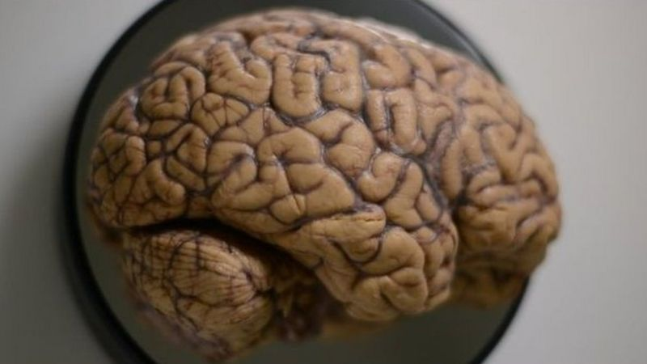

8 апреля 2017
И ученым предстоит еще немало труда, чтобы понять, как он работает
Что на самом деле происходит у нас в голове, когда мы формируем воспоминания и сохраняем их на будущее?
Группа американских и японских ученых совершило открытие, которое поразило и восхитило их самих.
Они обнаружили, что мозг "удваивает" каждое воспоминание, записывая любые пережитые нами события дважды.
Одна запись - для немедленного, сиюминутного использования, а другая - на всю жизнь.
Раньше считалось, что процесс начинается с формирования воспоминания в кратковременной памяти, а потом оно постепенно переходит в долговременную.
По словам ученых, это открытие было неожиданным, но вместе с тем - прекрасным и убедительным.
Значительный прорыв
В запоминании пережитого нами опыта активно участвуют две области мозга.
Гиппокамп - это хранилище кратковременной памяти, а кора головного мозга служит для долгосрочного хранения.
Эта идея приобрела популярность в пятидесятых годах прошлого века после случая с Генри Молайсоном.
Во время операции по поводу мучивших его эпилептических припадков у него был повержеден гиппокамп. После этого Генри утратил способность запоминать любую новую информацию, однако сохранил память обо всём, что происходило до операции.
После этого в ученом мире утвердилось представление о том, что память о событиях формируется в гиппокампе, а потом перемещается в кору головного мозга, где она и хранится в дальнейшем.
проводились на мышах
Однако исследователи из центра по изучению генетики нейронных цепей Riken-MIT поставили совершенно изумительный опыт, наглядно продемонстрировавший, что это не так.Эксперименты проводились на мышах, но предполагается, что их результаты применимы и к людям. Ученые изучали, как определенные воспоминания формируются в виде кластера взаимосвязанных клеток мозга в качестве реакции на пережитый шок. Затем они с помощью луча света, направленного на мозг, добивались контроля над деятельностью отдельных нейронов, что позволяло им в буквальном смысле "включать" и "выключать" воспоминания. Согласно выводам, опубликованным в журнале Science, формирование воспоминаний происходило одновременно в гиппокампе и в коре головного мозга. Профессор Шушуму Тонегама, директор исследовательского центра, в интервью Би-би-си признает, что результаты экспериментов удивили ученых.